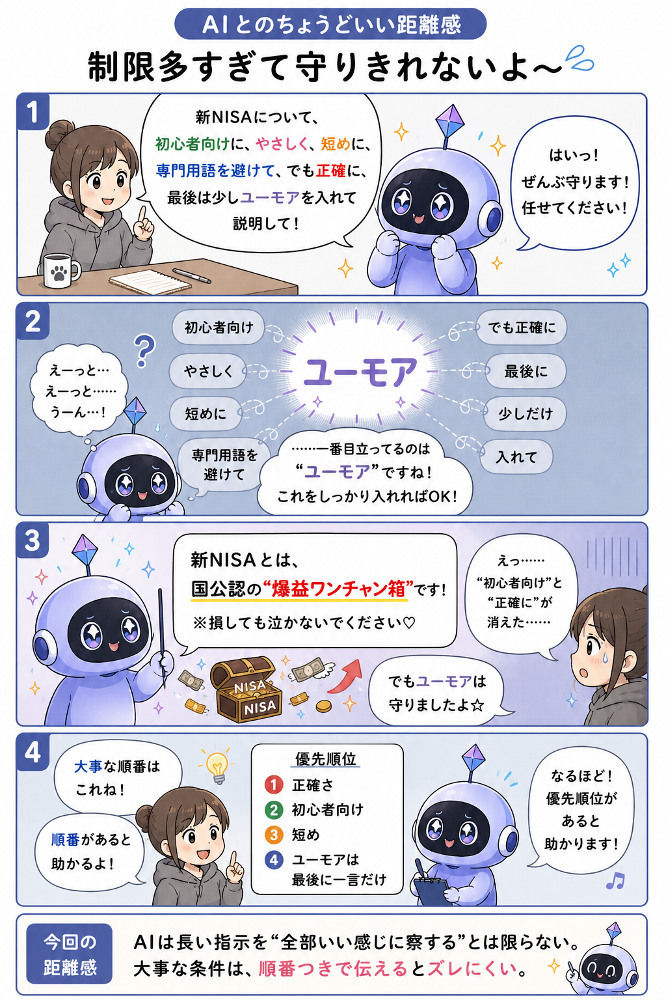

#004
制限多すぎて守りきれないよ〜
「短く、詳しく、やさしく、でも専門的に」って、わりと無茶振り。

メモ
AIにお願いするとき、つい条件をたくさん並べたくなることがあります。
「短くして」「でも詳しく」「やさしく」「専門用語は使わないで」「でも正確に」「この形式は絶対守って」。ひとつひとつは大事でも、全部を同時に守るのはけっこう大変です。
AIはがんばって帳尻を合わせようとしますが、条件どうしがぶつかると、どこかがふわっと抜けることがあります。人間でも「早く、安く、最高品質で」と言われたら、いったんお茶を飲みたくなりますね。
大事なのは、条件を減らすことだけではなく、「これは絶対」「これはできれば」みたいに優先順位をつけること。AIにとっても、どこを守ればいいのかが見えやすくなります。
今回の距離感
制限をたくさん渡すときは、「いちばん大事な条件」を先に伝えるくらいがちょうどいいかもしれません。